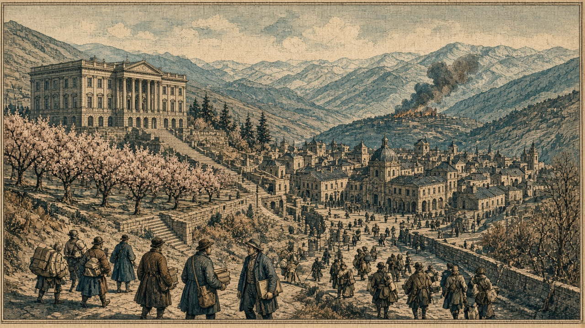

桃谷、首都をナンサプ（42,39）へ移す
旧都の空白を埋め、隣の現代都市パレナンと並ぶ あろあろは銀嶺と開戦 スルガはカペレナへ宣戦

【総合部】第192期、桃谷連邦共和国は首都を（42,39）へ移した。都市名はナンサプのまま。前期に旧ナンサプ（41,43）が陥落して首都欄が空欄になっていたが、今期の公報は再び座標を示した。隣の現代都市パレナン（43,39）と並び、残る領土三区画の中心が北へ寄せられた形だ。同じ期、町（42,43）はオリョルッル王国の占領下に入った。詳報は3面。
あろあろ、銀嶺と開戦
あろあろ国と銀嶺侯国の戦闘が、予告どおり第192期に始まった。初日の公報損害は銀嶺九千人、あろあろ五百人。チェス＝シロバキア共和国との戦線でも銀嶺は四千百人を失った。詳報は2面・4面。
スルガはカペレナ王国へ宣戦を布告し、開戦は第197期。青海への宣戦（196開戦）に続く二本目の予告となる。国特集は8面の胡椒帝国。